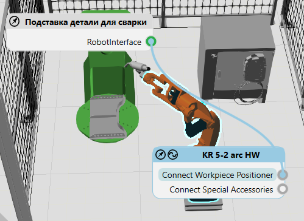

Тип поведения интерфейс используется для физического или удаленного подключения компонентов.

Типы
Название |
Описание |
|---|---|
Позволяет компоненту соединяться с другим компонентом. |
|
Позволяет компоненту соединяться с двумя или более компонентами. |
Формирование соединений
В некоторых случаях интерфейс используется для связи поведения в одном компоненте с поведением в других компонентах.

Деталь переносится с фидера на конвейер с помощью интерфейса
В других случаях интерфейс используется для присоединения/отсоединения узлов компонентов, например, при установке инструмента на конце манипулятора робота и съемного датчика на пути конвейера.

Инструмент подключен к роботу и прикреплен к узлу фланца робота.
Для физических соединений, используйте команду PnP для подключения компонентов с совместимыми интерфейсами, которые расположены на элементах рамки и указаны стрелками в 3D-мире.

Для удаленных соединений включите переключатель Интерфейсы и используйте редакторы соединений компонентов, чтобы связать абстрактные интерфейсы друг с другом в трехмерном мире.
